Every night, while the world sleeps, a hidden council loads a ready-made script for tomorrow into every mind on Earth — and people wake up and live it, none the wiser. A burned-out Boston broker is the glitch: his own sleep hurls him to a random point on the planet — no money, no papers, no explanation. The one man outside their script may be the only one who can rewrite it.
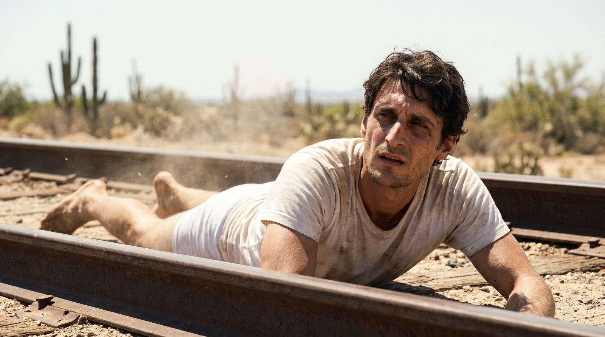
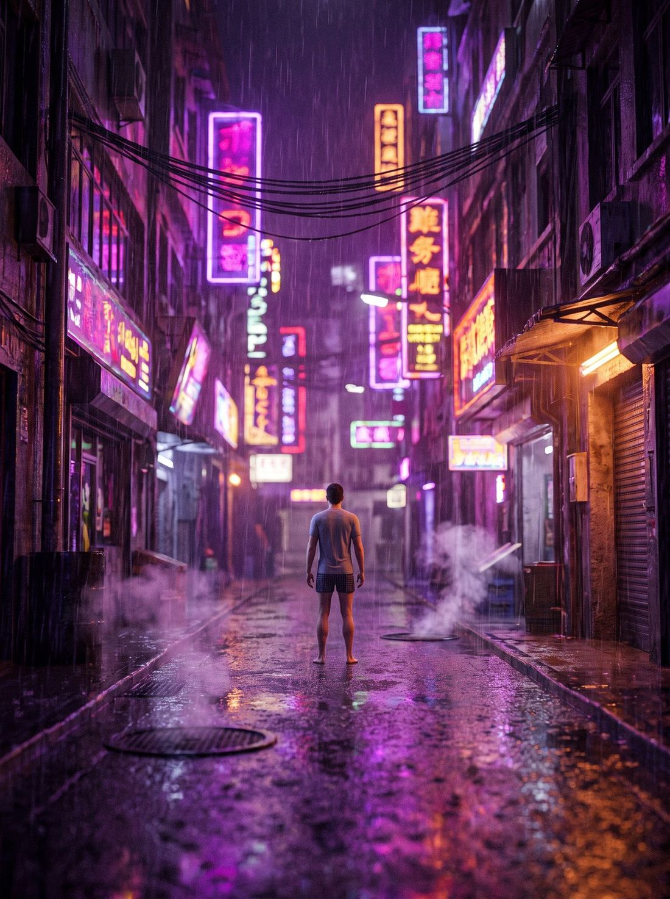
The rule is simple, and it has never been broken: the moment John falls asleep, he wakes up somewhere else on the planet. No money, no papers, barefoot — a T-shirt and briefs, every time. Distance doesn't matter. Walls don't matter: a locked cell, ambulance restraints, a chained padlock — all of it stands empty by morning. He can't turn it off. He can't choose where. All he can do is stay awake — and no one stays awake forever.
This is not a time loop. Days don't repeat, and the world moves on without him: bills pile up, his family buries hope, the police open files. John remembers everything. Only the coordinates reset.
One more thing: every morning, someone already knows where he is.
Boston broker John lies for a living — to clients, to his boss, to himself. After one bender too many he wakes up on railroad tracks in the Mexican desert, seconds ahead of a freight train. Robbery, he decides. Then a locked cell stands empty by morning. A hidden-camera show, he decides. Then a Prague phone call ends it all: he's been gone two weeks, he's fired, and his ex-wife's last words are "Goodbye, John."
So he stops calling home — and starts driving there: a stolen pickup across Ontario, racing the police and sleep itself, until a motel room, a chain, a padlock, a knock at the door. By morning the chain hangs locked and empty — and a mark is drawn in the snow on the hood.
After rock bottom in a Seoul den and on a Naples subway platform, John stops fighting the game and starts playing it: a wager with a Russian billionaire, won overnight. Then a Singapore ATM greets a man who never gave his name — HELLO, JOHN — and prints a receipt:
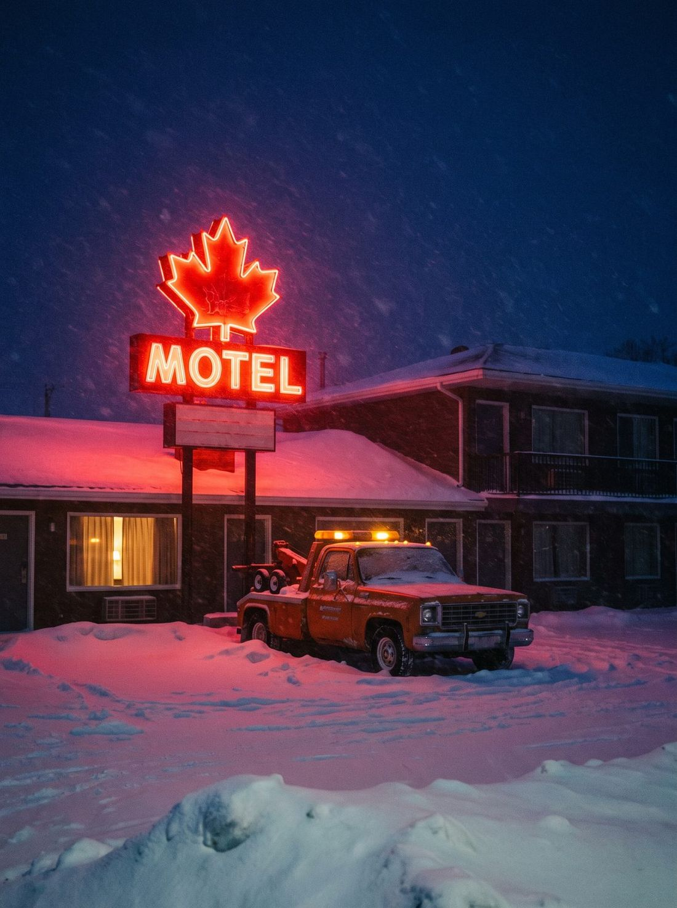
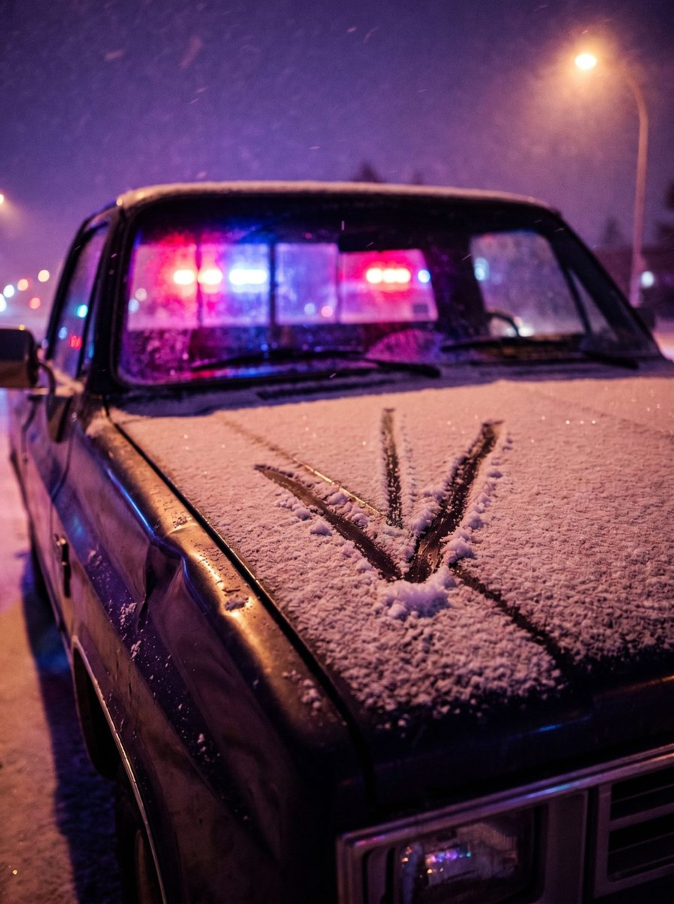
The audience starts seeing them long before the hero does: a wide check-mark and a vertical stroke. Scratched into a cell wall. Chalked on a post. Drawn by a finger through the snow on a stolen pickup's hood. Stroke up: help here. Stroke down: run. The marks hide among genuine hobo signs — the chalk language of drifters that nobody reads anymore.
Someone is marking up the planet along John's route — and it isn't Igor. The show trains its audience to hunt for signs in the frame, the way Lost trained a generation to count numbers.
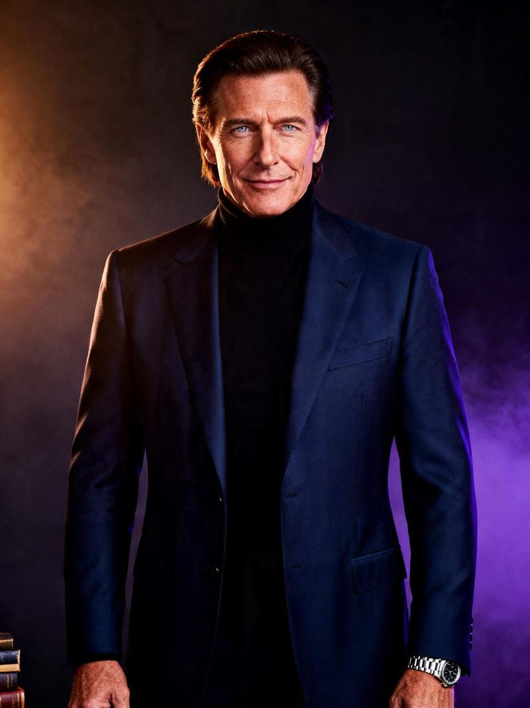
The billionaire behind Luminis Group. "To count on luck is to surrender power over your life." Lost a bet to John. A little too easily.
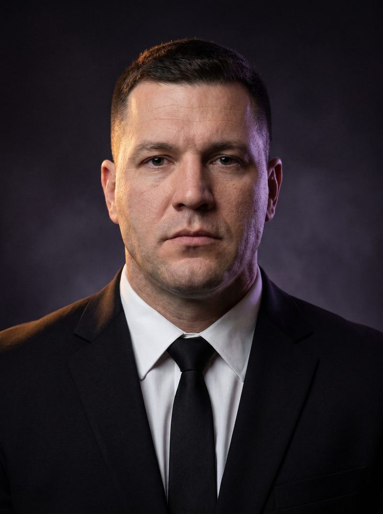
Igor's shadow. An expressionless face from a TV news clip that John will recognize in the middle of the ocean.
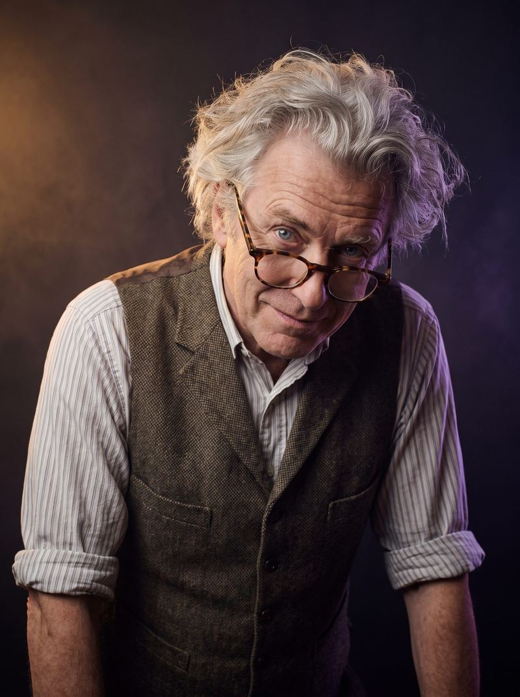
A sleep doctor from a Prague beer hall: "At night the brain assembles your tomorrow." He doesn't know yet how literally right he is.
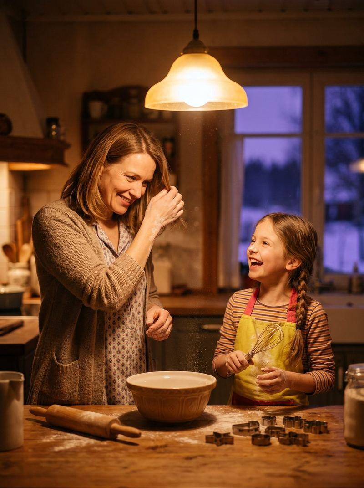
Everything John lost before the first jump. The stake behind every hand he plays.
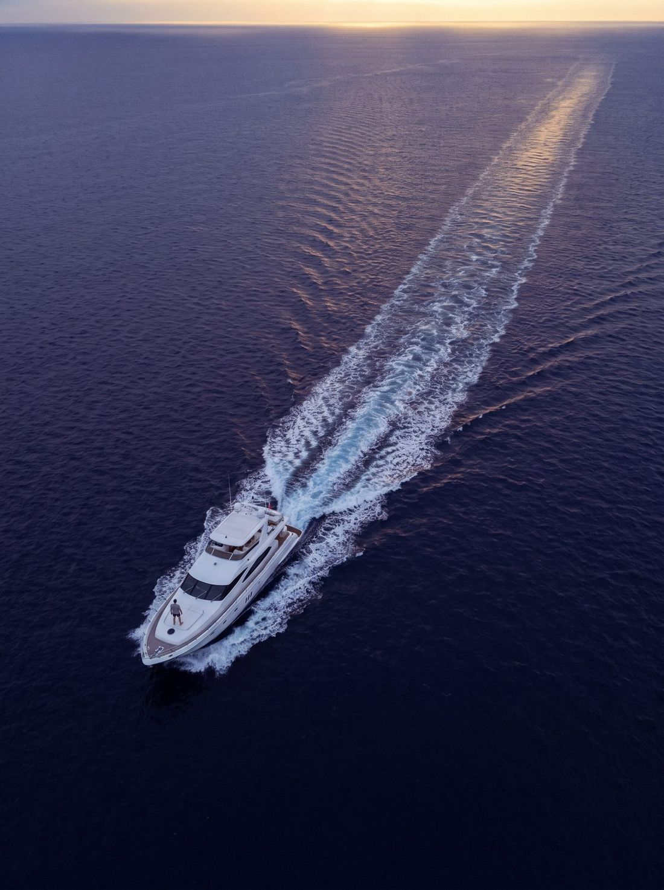
The bet was never a bet — it was a recruitment test. Igor's empire has use for a man no border, lock or guard can hold, and the season pulls John into jobs only he can do. He learns the price of his gift fast: anyone who gets close becomes leverage. Meanwhile the marks add up to a pattern: a second force is shadowing his jumps — one that pays in clues.
By the season finale John understands there is more than one player at the table. Igor's empire. The people behind the signs. And — in stray shadows across the behavior of both — a third: someone above the game itself.
Based on the first novel of the completed saga.
John is the single glitch in the global script. To some — a threat. To others — a weapon.
Every episode opens with a new awakening: new country, new language, zero resources. Inside each hour, four gears turn:
An anthology inside a serial: a new location every episode, a guest role every episode — and a season-long hunt that never lets go. The through-line of the season's first half: reach Igor. John is convinced the man who found him in the middle of an ocean knows the truth about the jumps; Igor becomes something like a savior to him. Every episode brings the meeting closer — and breaks it. The disappointment is by design: Igor has no answers. Igor has plans.
This is the show that physically cannot stop moving.
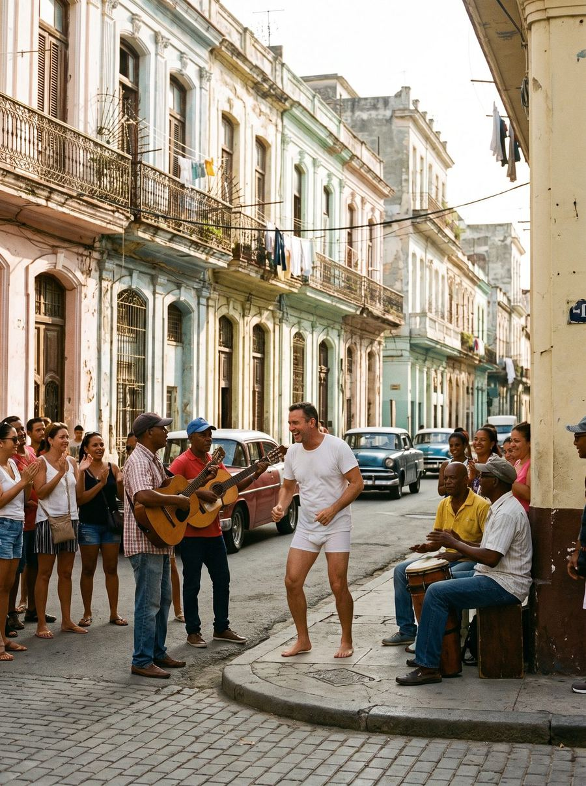
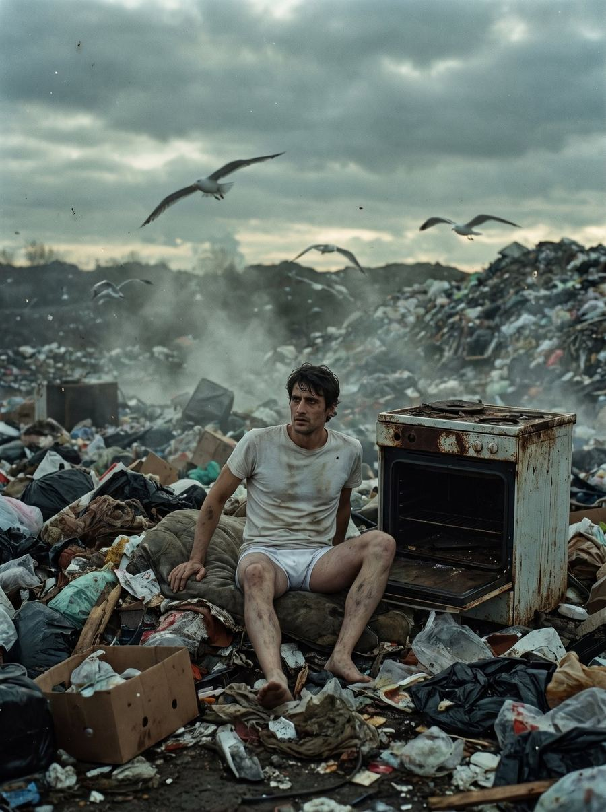
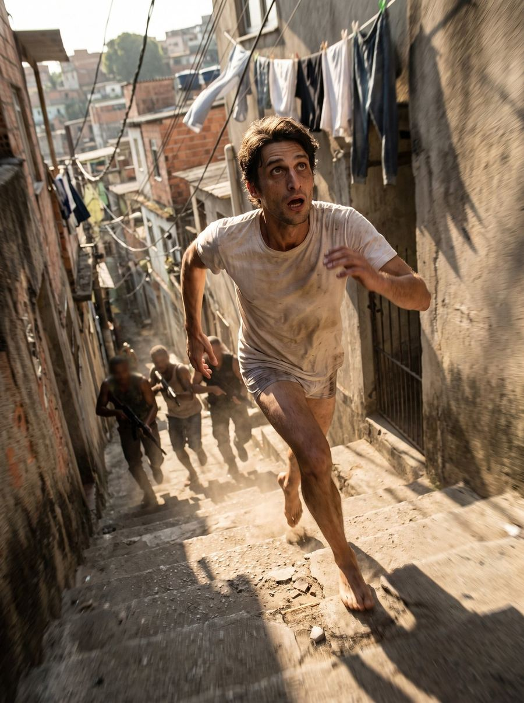
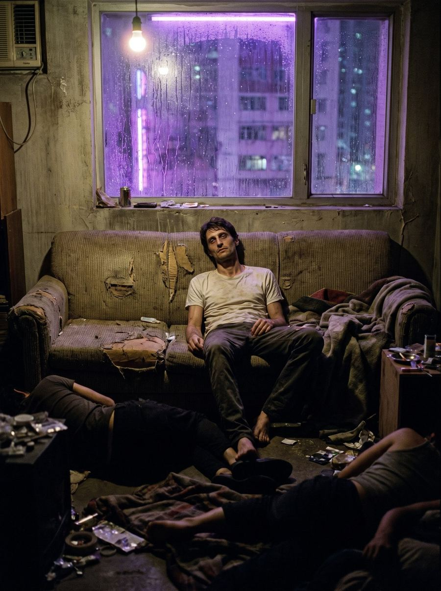
A dark mystery with a dry sense of humor. One small figure against an enormous planet — and the camera loves them both. Real countries, no postcard gloss: a garbage dump smash-cut against sunlit Havana. Luminis purple is the color of power; dawn gold is the color of a freedom that keeps turning out to be someone else's.
"As a psychological thriller series, this project fits into the current zeitgeist of what is working in TV currently: high-concept drama series with propulsive plots and deeply resonant characters."
THE BLACK LIST SCRIPT EVALUATION, 2026"Even with John's sad state, the audience feels both empathy and disappointment. This makes John a dynamic character."
THE BLACK LIST SCRIPT EVALUATION, 2026Independent script evaluation, quoted; not an endorsement by The Black List.
Unlike any of them, our hero can't stay anywhere longer than a day.
Creative team attached, subject to financing.
One line is enough: who you are and what you'd like to read. Materials are shared as view-only links within one business day.
Email George